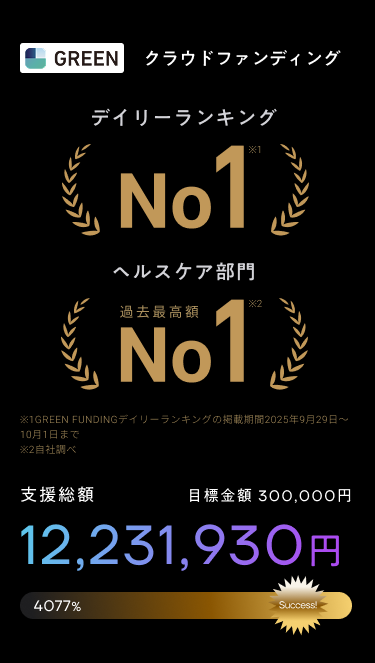
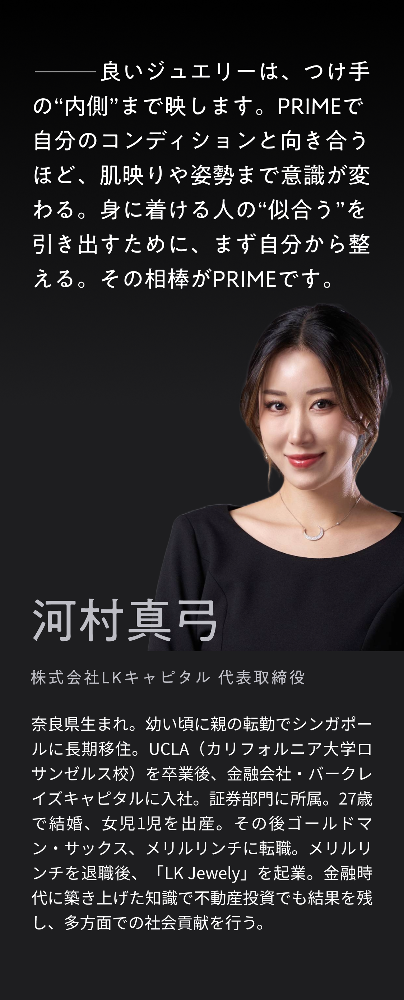
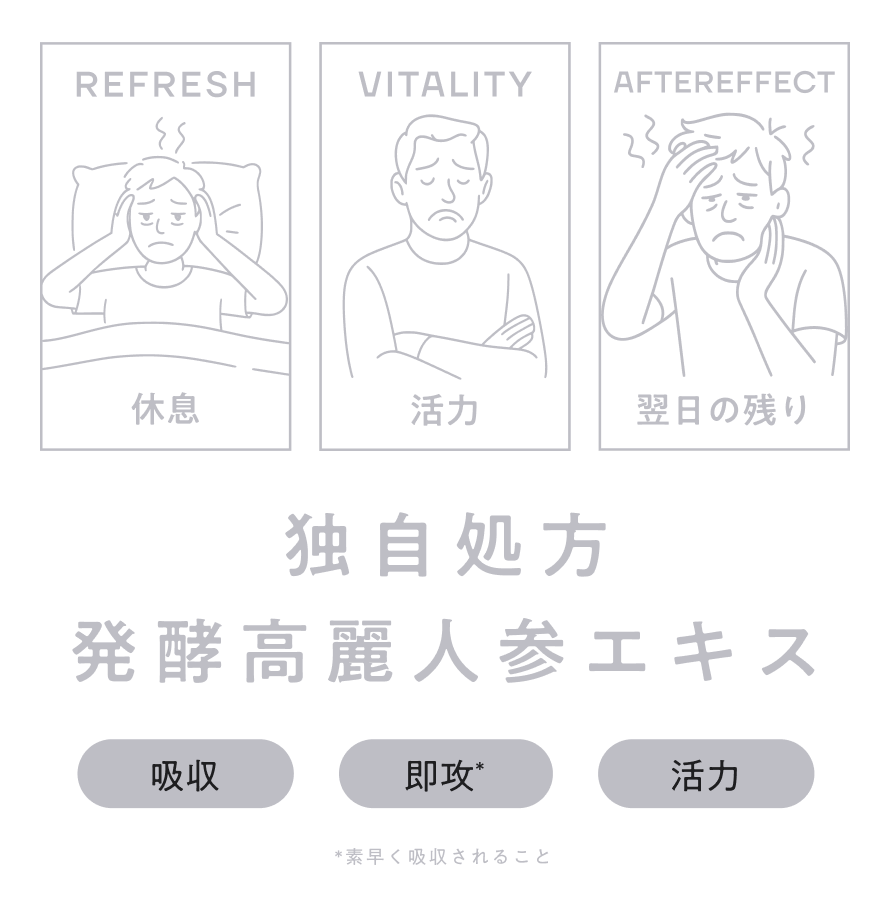
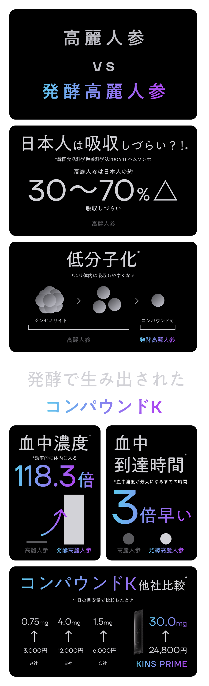
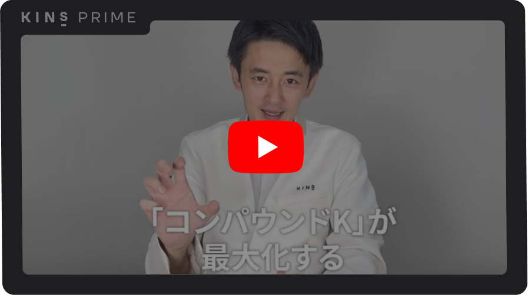
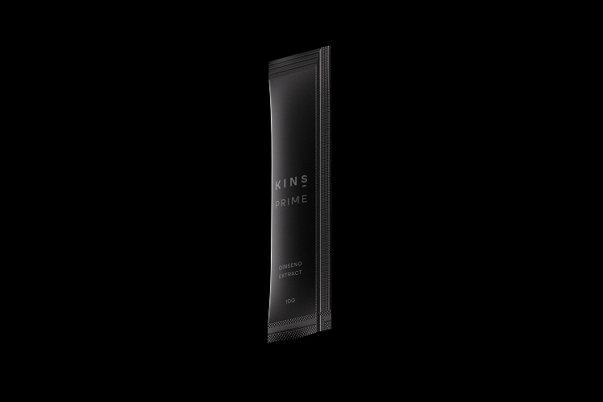
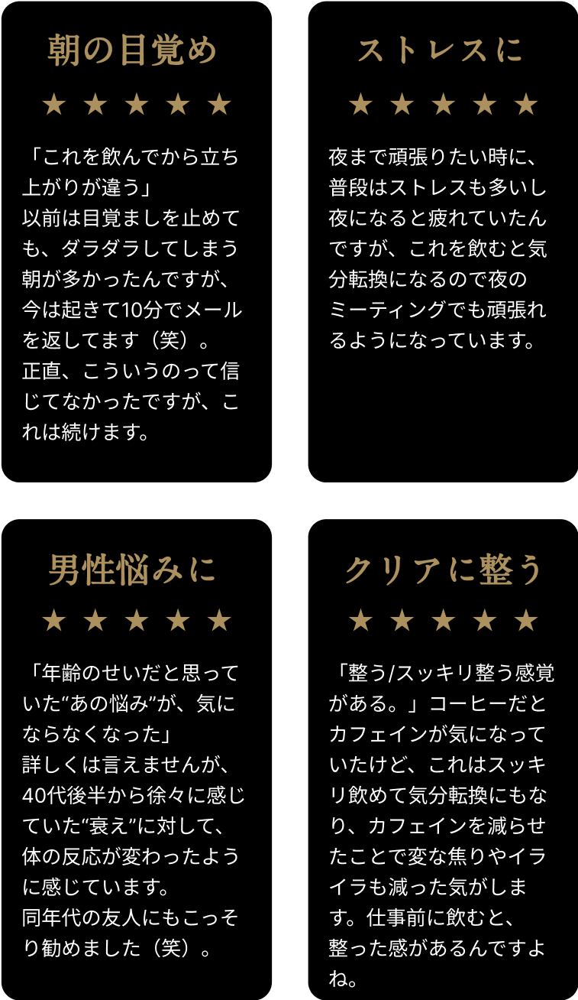

カートは空です
買い物を続ける朝・夜の2包が基本。92%が体感。
※自社調査：2026年1月 KINS PRIME利用者アンケート (N=103)
6年根の高麗人参を、KINSの発酵技術で液体エキスに。余計な派手さより、日々の土台づくりに寄り添う一包を目指しました。持ち運びしやすいスティックで、必要なときにサッと。

「分かりやすい・実践しやすい」
BUDDICA中野優作 × KINS下川穣の特別対談が大反響!
対談の中で、中野優作さんの腸内フローラ検査の結果を下川が徹底解説。中野優作さんの生活習慣の落とし穴や発酵高麗人参を飲んでみて感じた体感のエピソードについて語りました。

KINSの顧問医師である内藤裕二先生が腸内フローラを題材にPIVOTチャンネルに出演されました。
内藤裕二／京都府立医科大学大学院,医学研究科教授,医学博士京都府立医科大学卒業。腸内細菌学、抗加齢医学、消化器病学が専門。酪酸菌と健康長寿の関係などの研究をはじめ、長年腸内細菌を研究し続けている本領域の第一人者。


こだわりの栄養成分・コンパウンドK
なぜコンパウンドKに
こだわるのか？

高麗人参を吸収するために重要な「コンパウンドK」。コンパウンドKの含有量を最大化するための KINS PRIME 独自のこだわりを下川が徹底解説します。
栄養価がピークの「6年根」高麗人参だけをふんだんに使用
高麗人参は「育てば育つほど良い」わけではありません。
本場韓国の農園から最も有効成分が濃縮される“6年根”だけを厳選した。質のばらつきがなく、安定した有用成分を含有しています。
“吸収できない”を“吸収できる”へ
高麗人参の有効成分「サポニン」は、本来、腸内細菌が分解して初めて体に届きます。しかし、腸内環境が乱れていると十分に吸収されません。
KINS PRIMEでは、発酵処理により、吸収されやすい「コンパウンドK」へあらかじめ変換。腸内環境に左右されずに、しっかり届きます。
コンパウンドK、圧倒的配合量
一般的な高麗人参ではごくわずかしか含まれない「コンパウンドK」。
本製品では、発酵技術によってこのコンパウンドKを1包あたり発酵高麗人参濃縮エキス2000mg中に15mgという高濃度で安定配合。 "飲んだ日にこそ飲みたい"という声が多数届いています。
やさしい酸味、クセのない飲みやすさ

「高麗人参は苦い」という常識を覆す、やさしい酸味とほのかな苦味の絶妙バランス。
そのままでも、水に溶かしても飲みやすく、毎日の習慣にしやすい味設計です。
無添加で、からだにまっすぐ届く
高麗人参は「育てば育つほど良い」わけではありません。
本場韓国の農園から最も有効成分が濃縮される“6年根”だけを厳選した。質のばらつきがなく、安定した有用成分を含有しています。

*モニター商品の提供によるユーザーレビュー
妊娠・授乳中、服薬中の方、体質・体調に不安のある方は、医師・薬剤師にご相談ください。体質に合わない場合はご使用をお控えください。
原材料名：発酵紅参濃縮液(韓国製造)／クエン酸
内容量：1箱あたり300g（10g×30包）
栄養成分表示（1包あたり）：エネルギー4.6kcal、たんぱく質0.13g、脂質0.02g、炭水化物0.97g、食塩相当量0.0026g
次の方は、ご使用前にかかりつけの医師・薬剤師にご相談ください。
決まりはありません。毎日続けやすいタイミング（例：朝と夜など）を決めるのがおすすめです。目安は1日2包です。
一般的な食品同士の併用は問題ありません。風味を楽しみたい方は、コーヒーやお茶とは時間をずらすのも一案です。医薬品を服用中の方は、医師・薬剤師にご相談ください。
発酵と液体化により角の立ちにくい風味に配慮しています。冷やすとより飲みやすく感じる方もいます。
健康食品のため感じ方には個人差があります。まずは1〜3ヶ月ほど習慣化することを目安にしてください。
気づいた時に1包お飲みください。まとめての多量摂取はお控えください。
体質や体調により合わない場合があります。妊娠・授乳中や小児のご利用は、事前に医師へご相談ください。
原材料表示をご確認ください。体質に合わないと感じた場合は使用を中止し、専門家にご相談ください。
直射日光・高温多湿を避け常温で保存してください。開封後はすぐにお飲みください。乳幼児の手の届かない場所で保管してください。
目安量は1日2包です。体調・食生活に合わせてご調整ください。過剰な摂取はお控えください。
服用中の薬（特に抗凝固薬など）や治療内容によっては注意が必要な場合があります。必ず事前に医師・薬剤師にご相談ください。。
※本品は健康食品です。特定の症状の診断・治療・予防を目的とするものではありません。食生活は、主食・主菜・副菜を基本に、バランスのよい食事とともにご利用ください。